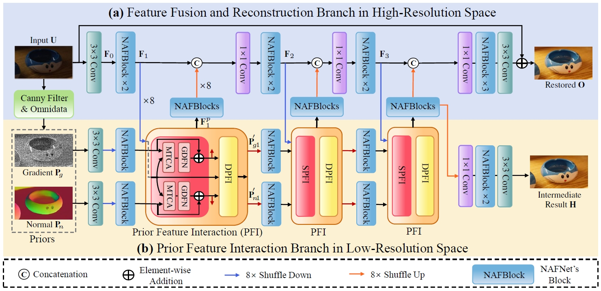
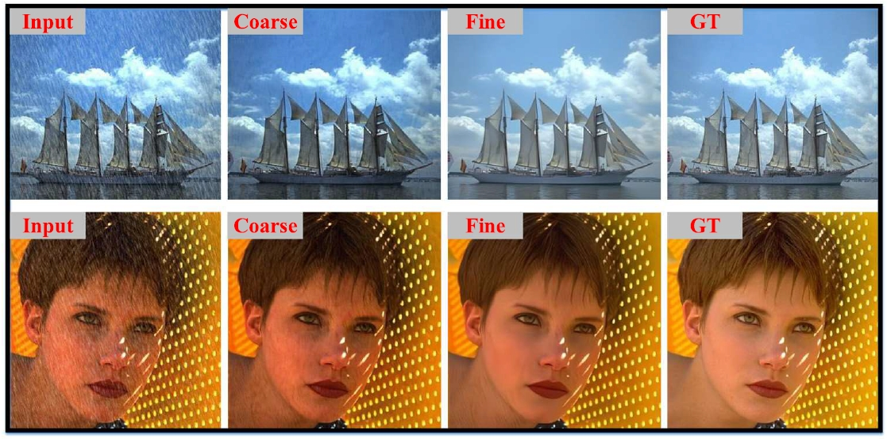
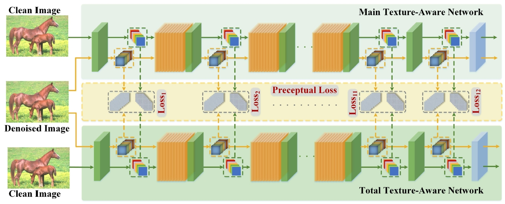
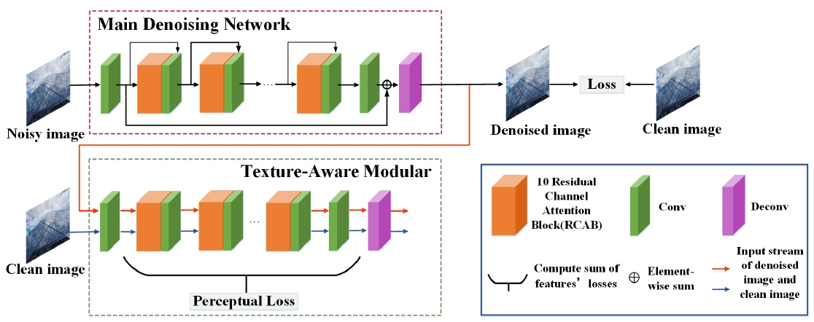

|
Liyan Wang (王丽妍) PhD Student School of Mathematical Sciences, Dalian University of Technology Email: wangliyan@mail.dlut.edu.cn |
{kind=link}
About MeI am Liyan Wang, currently a PhD student at the Dalian University of Technology, supervised by Prof. Zhixun Su. I received the Master's degree and the Bachelor's Degree in computer science and technology from the School of Computer Science and Artificial IIntelligence, Liaoning Normal University. My research interests include computer vision and deep learning. ResearchI'm interested in general image restoration and UHD image restoration based on deep learning, including super-resolution, denoising, deraining, dehazing, etc. And my recent works mainly focus on diffusion model with application in computer vision. |
Publications |
|

|
Ultra-High-Definition Image Restoration: New Benchmarks and A Dual Interaction Prior-Driven Solution
Liyan Wang, Cong Wang, Jinshan Pan, Xiaofeng Liu, Weixiang Zhou, Xiaoran Sun, WeiWang, and Zhixun Su* arXiv / Code, 2024 |
|

|
Coarse-to-Fine Mechanisms Mitigate Diffusion Limitations on Image Restoration
Liyan Wang, Qinyu Yang, Cong Wang, Wei Wang, and Zhixun Su* Computer Vision and Image Understanding (CCF-B), 2024 Paper / Code |

|
Progressive Local and Non-Local Interactive Networks with Deeply Discriminative Training for Image Deraining
Cong Wang, Liyan Wang, Jie Mu, Chengjin Yu, and Wei Wang* ACM MM (CCF-A), 2024 Paper |
|

|
A Robust Image Denoising Method With Multiview Texture-Aware Convolutional Neural Networks
Fu Bo, Liyan Wang*, Zhongxuan Luo IEEE MultiMedia , 2022 Paper |
|

|
Robust Image Denoising with Texture-Aware Neural Network
Fu Bo, Liyan Wang, Zhongxuan Luo* ICME (CCF-B), 2021 (Oral Presentation) Paper |
|
• Weak texture information map guided image super-resolution with deep residual networks
Bo Fu*, Liyan Wang, Yuechu Wu, Yufeng Wu, Shilin Fu, and Yonggong Ren Multimedia Tools and Applications (CCF-C), 2022 Paper |
|
• Underwater Image Restoration and Enhancement via Residual Two-Fold Attention Networks
Bo Fu*, Liyan Wang, Ruizi Wang, Shilin Fu, Fangfei Liu, and Xin Liu International Journal of Computational Intelligence Systems, 2021 Paper |
|
• Deep Residual Split Directed Graph Convolutional Neural Networks for Action Recognition
Bo Fu, Shilin Fu, Liyan Wang, Yuhan Dong, and Yonggong Ren IEEE MultiMedia, 2020 Paper |
Academic Services• Journal Reviewer: IEEE Transactions on Circuits and Systems for Video Technology (T-CSVT), 2024 • Conference Reviewer: ACM International Conference on Multimedia (ACM MM), 2024 |
Honors• 2023 Second Prize Scholarship of Dalian University of Technology • 2019, 2022 Outstanding Graduates of Liaoning Province • 2022 Excellent Master's Thesis of Liaoning Normal University • 2021 National Scholarship, China • 2021, 2022 Second Prize Scholarship of Liaoning Normal University • 2020 The First Prize Scholarship, Liaoning Normal University |
Educations• 2022.09 - present, PhD student, Dalian University of Technology. • 2019.09 - 2022.06, Master, Liaoning Normal University. • 2015.09 - 2019.06, Undergraduate, Liaoning Normal University. |